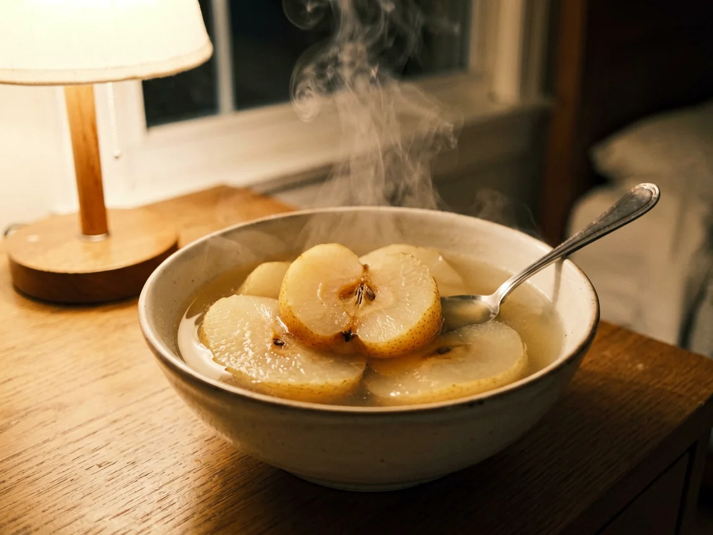

Snow Pear Water in the Night Kitchen
When I was seven, my grandmother heard me coughing from the back room and went to the kitchen without turning on the ceiling light. The pear, the small pot, and the bowl she carried upstairs are the part I remember.

Light under the kitchen door
I woke to the sound of a knife touching the chopping board. My grandmother had pulled her coat over her nightclothes and was working by the stove lamp. She chose a snow pear from the fruit bowl, opened the rock-sugar tin, and set the smallest pot on the burner.
She did not call the rest of the family. The house stayed dark except for the strip of light under the kitchen door. When the pear pieces had turned pale and soft, she poured the liquid into a bowl and carried it with both hands so it would not spill on the stairs.
The bowl beside the bed
My grandmother sat on the edge of the bed while I drank. She held the spoon between mouthfuls and waited. There was no explanation and no speech about what the pear was meant to do. Her attention stayed on the bowl, the blanket, and whether I had settled back against the pillow.
Other night objects belonged to the same room. Sour jujube seeds sometimes waited in a paper packet by the kettle. Tremella soup might remain from the afternoon pot. A warm towel hung over the washstand. She chose among them by habit, then put each thing away when the room was quiet again.
The motion I remembered
Years later, when my own child was awake in the night, I reached for a pear before I thought about why. I used a small pot and carried the bowl upstairs with both hands. Only then did I recognize my grandmother's movement in mine.
The fruit bowl was nearly empty the next morning. The washed pot stood upside down by the sink, and one spoon lay on the draining cloth.